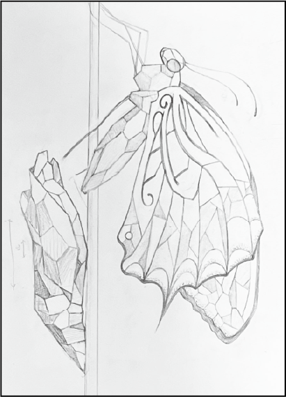
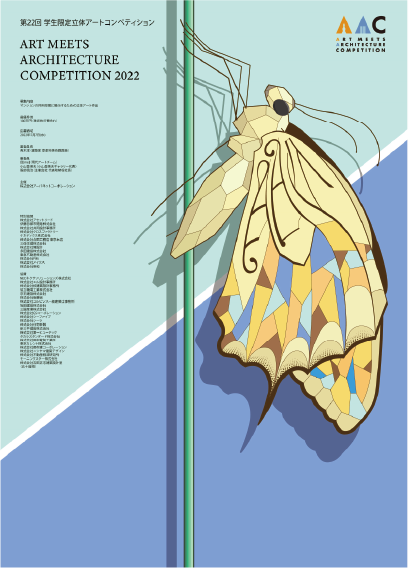
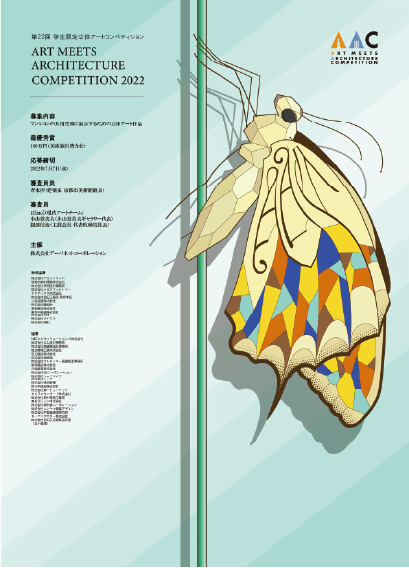
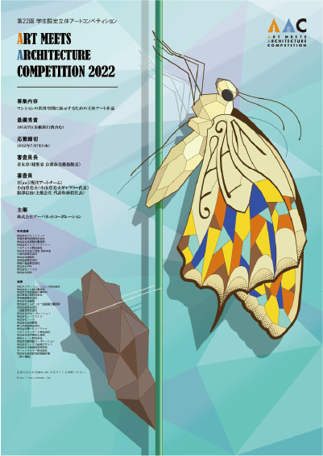

[制作過程]

[手書きで描いたデザイン案]
今後活躍していく学生たちの飛躍の思いを込めて蝶がさなぎから羽化する様子を立体的に表現した。

手書きのデータを取り込み、イラストレーターでデザインした。 統一感のある色使いを意識して、全体的なイメージを掴めるよう制作した。 B2という大きなサイズだったため、 蝶の目や羽に点描法で細かなアクセントを加えた。

「AAC」の文字が入っている蝶の羽が目立つよう柄の彩度を上げ、鮮やかにした。 羽の柄はステンドグラスを参考にデザインしている。 背景は蝶に光が差し込むイメ ージに変更した。

フォントや背景のデザインなど細部のデザインを仕上げた。 よりシャープさと立体感が出るよう色彩のコントラストも調整。 さなぎは蝶と対比させる為、 明度の低いデザインにしている。